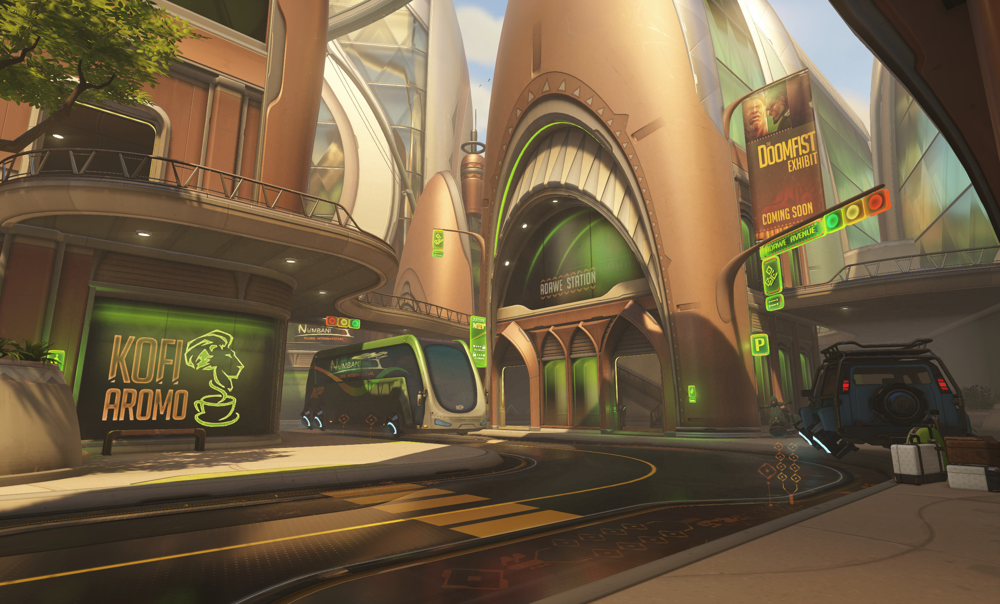

Me gustaría empezar felicitándote, Efi. La beca es un honor muy grande y bien merecido. ¿Cómo te sientes?
¡Genial! No me lo esperaba para nada, así que fue una gran sorpresa. Al principio pensé que era una broma, que uno de mis amigos me estaba tomando el pelo. Ya ha pasado una semana y sigue sin parecerme real, pero estoy muy contenta. Es mucho mejor que ganar la feria de la ciencia.
¿Cómo te metiste en el mundo de los robots y la inteligencia artificial?
Bueno, es un tema que siempre me ha interesado. Cuando mis padres me compraron mi primer kit de robótica me obsesioné con crear pequeños drones. Al ver que se me daba bien, intenté construir robots para que hiciesen mis tareas y ayudasen en la casa. Mis padres piensan que es hacer trampa... ¡No es justo! (risas)
Quiero crear cosas que mejoren nuestras vidas. Y, algún día, mi sueño es construir algo que pueda mantenernos a salvo, ¡como los nuevos OR15! Creo que eso sería estupendo.
Leer la entrevista completa.| Positivo | Negativo |
|---|---|
| 175 | 58 |